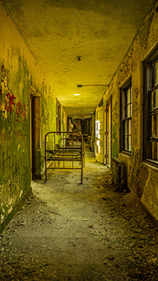
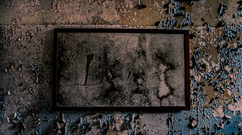

Trapped By Television (Graphic Design Project)
The purpose behind this project is to represent the idea of being "trapped" by our televisions. We tend to become so consumed by watching that we forget about our surroundings. Nature is available for free, while we end up paying for television to watch shows that may include natural scenery. I used photoshop to design these two pictures, and the television sets featured in both were from my own photography collection. I used Adobe Photoshop and Adobe Lightroom for this project.

Golphin (Graphic Design/Branding Project)
For this project, I created my own brand. Included below are slides from my brand presentation, which display an overview of each feature of my brand design process. One of these features include the meaning of Golphin, which I thought of during a brainstorming session. I also included applications such as the logo, slogan, packaging, and mockups - all of which I designed myself! I used Adobe Photoshop, Adobe Illustrator, and Microsoft Powerpoint for this project.

Monograms (Typography/Logo Project)
I designed my own monograms for a typography project, using my initials "GR" and my full initials "GAR." I classify them as potential logos due to their simplistic and memorable nature. These were all created using Adobe Illustrator.
Illustrations/Poster Designs
These are examples of illustration work I've done for poster designs. I created the "Bear Essentials" poster with inspiration from the recent events of the Covid-19 pandemic. Many are hoarding toilet paper and leaving store shelves "bare." The bear is based off the Charmin bear, who I felt best represented the comical meaning behind this poster. As for the corgi poster, I created it to bring a smile to an otherwise stressed out world during the pandemic. Corgis are my favorite type of dog, and I personally think that their signature goofy smiles are contagious!
Shadows Project (Photography)
This is a set of photographs from a photography project based around shadows. The goal was to capture shadows in a unique and meaningful way using Camera RAW. A requirement was to make each image black and white. I visited an old hospital to set the scene for my images. This type of setting is filled with shadows, but finding the right ones at the right moments was an interesting challenge. I tried taking a self-portrait to observe whether or not my presence could affect or alter the shadows created from the windows. I had a collective 90+ images taken for this project, and I chose these 5 that I felt best represented natural shadowing in the most effective ways. I edited using Adobe Photoshop.
Frame Project (Photography)
This is a set of photographs from a photography project based on framing. The objective was to use framing and the concept of frames to capture different subjects. My subject in these two images is an old farmhouse, which I chose because it is a familiar location for me. I always pass by it on backroads near my hometown in Massachusetts. The basic shapes that the house had were helpful in finding different perspectives to frame. My two chosen perspectives were one up-close and one from a distance, as they are ultimately opposing set-ups. They display two completely different framing opportunities. The up-close one best portrays those natural square and triangular shapes, and doesn't feature any surrounding land. On the other hand, the distanced one features more land while still showing off the house's shapes. Collectively, I had 30+ images taken for this project using Camera RAW. I edited using Adobe Photoshop.
Additional Photography (Samples From My Own Collection)
Featured below are images from my own photography collection. Photography is one of my favorite hobbies, and I enjoy capturing a variety of settings. There's just something about clicking that shutter button! I prefer to freely shoot versus using a tripod, although for some I have used a tripod to capture angles above my height. My two favorite types of locations to travel to and photograph are forgotten buildings and natural scenery. I like both portrait orientation and landscape orientation, and use my best judgment on which to use for each image I capture. I edited each of these using Adobe Lightroom, where I have 6,000+ images stored for editing in my free time.


